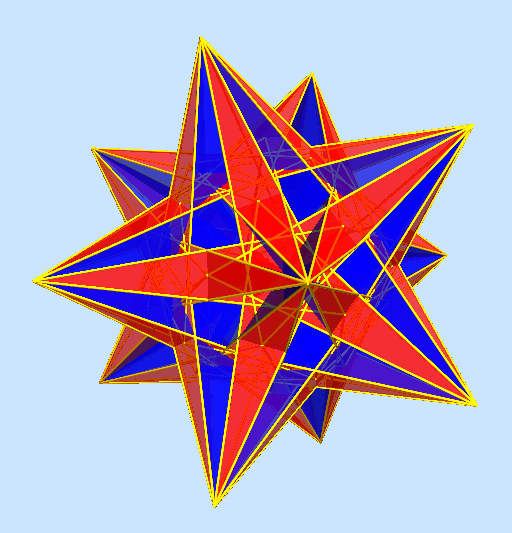
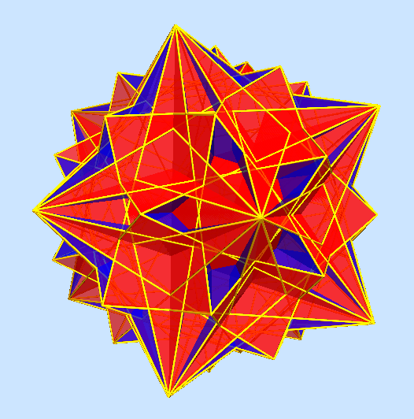
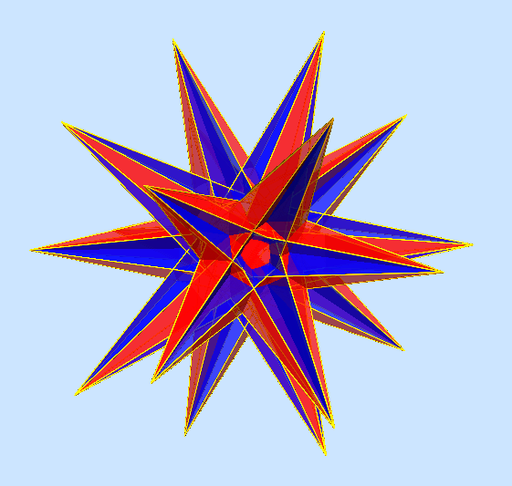
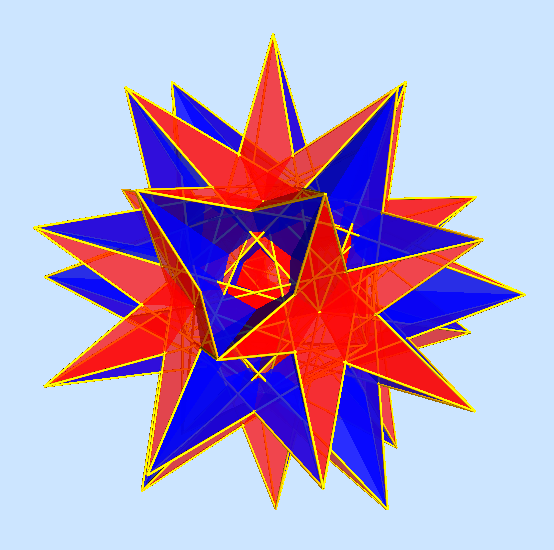
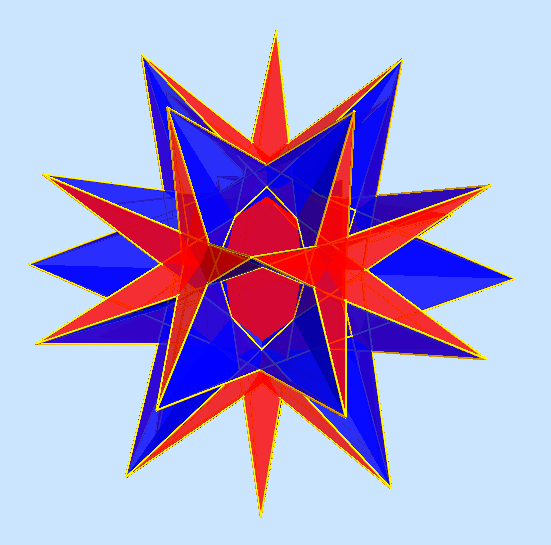
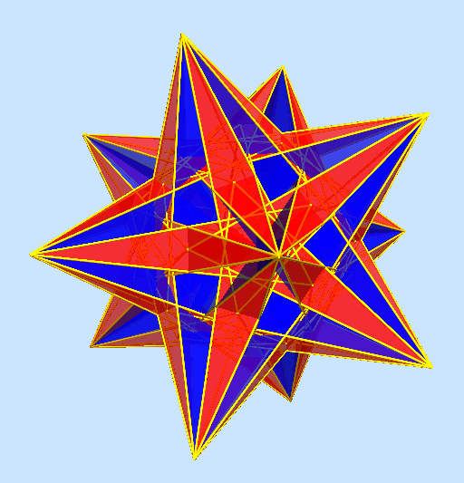
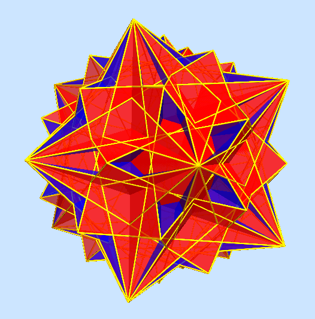
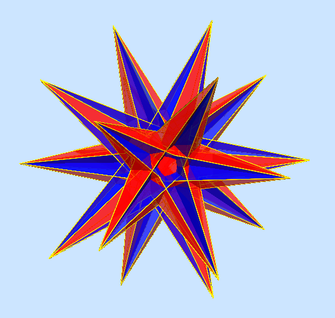
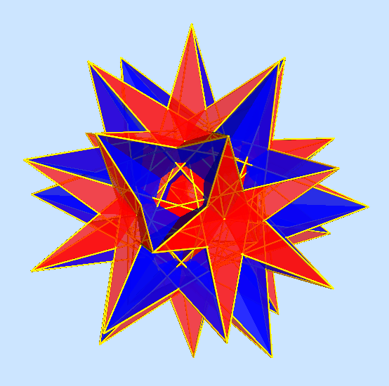
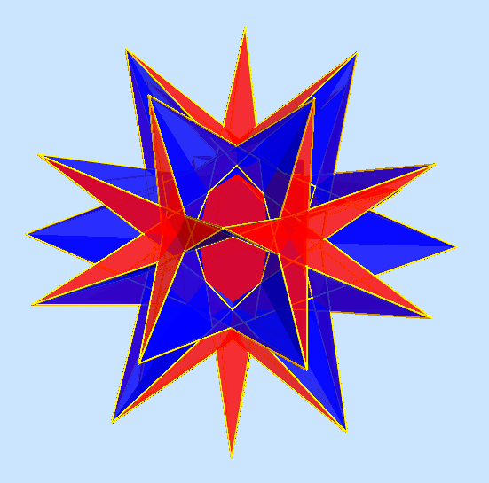


Regular polyhedra are ones for which all the faces, edges, and vertices are transitive, that is, the symmetry group of the polyhedron maps each element of a given type (face, edge, or vertex) to each other one. The nine regular polyhedra have been known for many years. If we relax the criteria that define them, we can investigate polyhedra for which the elements of any one type are transitive. Face- and vertex-transitive polyhedra have been studied extensively and there are many infinite families of them. In particular, the regular-faced vertex-transitive (i.e., uniform) polyhedra are extremely well known, and there are many web sites devoted to them.
In contrast, there appears to have been little interest in edge-transitive, or isotoxal, polyhedra. Many writers claim that they must be face-transitive or vertex-transitive (or both) as well, but that is not necessarily so. This conclusion may be due to an implicit assumption that polyhedra must be topologically spherical (and thus satisfy Euler's formula), or that there cannot be faces that pass through the center of symmetry, or that there cannot be star-shaped vertices. Yet the set of uniform polyhedra has been well known and accepted for decades and many of them violate all of these restrictions.
Below are the edge-transitive polyhedra that are neither face- nor vertex-transitive. I believe that these have never yet been described elsewhere. Click on the images for more details on each one. (The last two are superficially similar, but differ in their facial structure.)
|
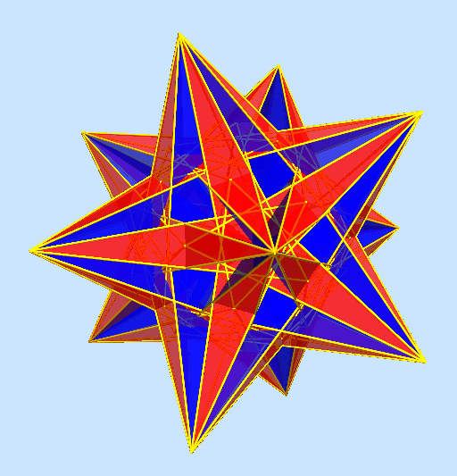
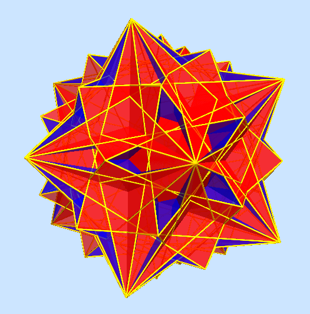
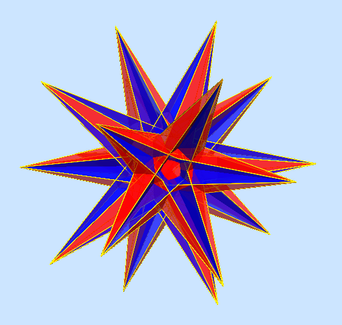
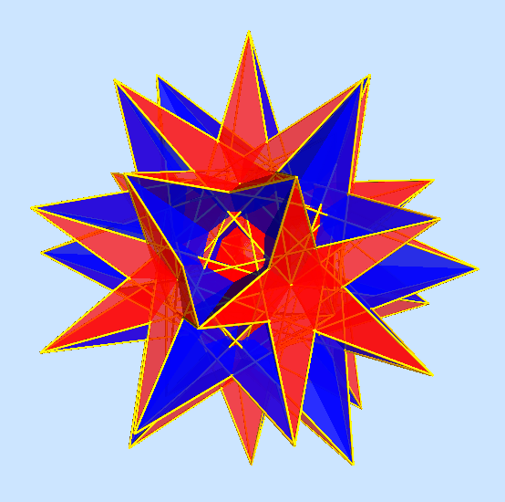
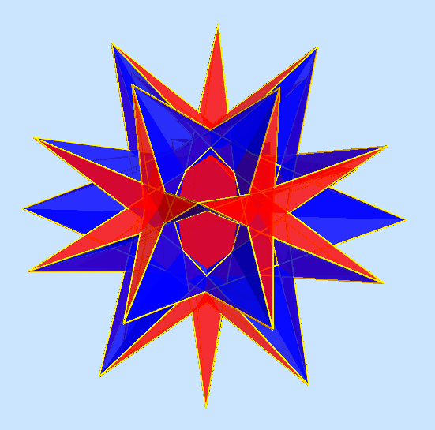
|
Unlike face- or vertex-transitive polyhedra, the edge-transitive polyhedra are finite in number. I found them all back in 1998, only now having written up the details of their enumeration. The resulting document contains a complete, fairly rigorous, enumeration of them.
This site also has details on nomenclature, much of which is also in the document, and tabular data on all of the edge-transitive polyhedra and compounds. The complete set includes some face-transitive ones that I believe to be novel as well.
An interactive application enables you to explore virtual models of all the isotoxal polyhedra and compounds in detail. You might need to enable WebGL in your browser in order to use it. If you encounter any strange effects, refreshing the page should clear them up.
| Enumeration (PDF) | Nomenclature | Complete List | About |